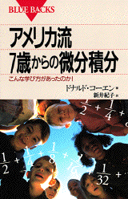

The Japanese translation of Don's book "Calculus By and For Young People (ages 7, yes 7 and up)", was done in about 1989-90 by Ms. Noriko Arai while she was at the UI. This book (cover above) is now in bookstores all over Japan beginning on August 20, 1998. It was published by Kodansha, in their BLUE BACKS series, with 18,000 copies in the first printing! On April, 6, 1999, from Kodansha "..To be frank with you, my boss considers your book as one of the successful books in those of foreign authors in recent years".
Aug. 21, 1998
I finally have your book in my hand! (Hiroshi attached a picture of himself
holding my book in his hand) It is a first step for many people to learn
your way of teaching. Thank you for you and your math teaching. I will continue
to show your thought into our culture.
Cordially, Hiroshi letitbe@dokidoki.or.jp
Hiroshi
Takimoto was the JUKU teacher in Matsuyama, Japan, who took his time to find and
convince Kodansha to publish Don's book(s). "I
want every child in Japan to know Don Cohen". Thank you Hiroshi! -
See how Hiroshi put Don's book "Calculus By and For Young
people-Worksheets" on
a CD ROM in Japanese and English!
++++++++++++++++++++
Aug. 23, 1998
Hi Don, .. I bought the translation of your book today in a small bookstore near
my house. The translation is also excellent. I teach calculus, statistics, and
geometry etc to about 400 students in a week. They are 16 years old to 20 years
old. I will recommend all of them to buy your book. Best regards, Shigeru
Tsuyuki, Shigeru
tsuyuki@rr.iij4u.or.jp
[Shigeru works for IES in Japan. To see all the wonderful java applets of IES go to http://www.ies.co.jp/math/java/ You can now see Don's ideas in four Java applets at IES]
Aug. 22, 1998 Hi Don, Congratulations! I bought your book today. I have read
only chapter 1 and 2, but I can say that its translation is plain and good. I
enjoy it. My son is eight years old. I will try your book with him.
I'll change my homepage to encourage people to buy and enjoy your book.
Cordially, Kazuaki http://web.kyoto-inet.or.jp/people/pxs5etl5/don.html
++++++++++++++++++++
Sept. 5, 1998
I have recently bought your book of Japanese version at Akasaka, Tokyo.
Congratulation for your book (Japanese edition) coming out in Japan. By the way,
I have been reading books by W.W. Sawyer for the past 20 years. The reason why I
started to read Sayers books is that I had not understood Math at all in the
past. The book by you is very close sense to Sawyer, I am very happy to find
your book at a bookstore. I want to ask you a favor. How can I get a English
version of this Calculus by and for young people. I would appreciate it if you
would advise it to me. Thank you for now. Hideo Okada
+++++++++++++++
Sept. 5, 1998 Yuichi Nishiya e-mail address: u1248@host.or.jp How are you
,Don? My name is Yuichi Nishiya. I teach Math. at IAI GIRLS' HIGH SCHOOL in
HAKODATE HOKKAIDO JAPAN,and have 2 sons of 6 and 11 years' old. I've read your
book (kodansha) just now.,and feel to send you e-mail rigjt now. Your math
program is very interesting. Ihave same idea that even seven years' old kids can
understand the concept of sequences and series.The most important thing is to
let the kids feel the essence of math concepts by the method of finding it by
themselves. I hope you to enjoy yourself by teaching kids. Good-bye!
+++++++++++++++
Sept. 6, 1998 From Kodansha
And now I have good news to tell you. We are going to print additional 2,000
copies late this month. We can say that your method was accepted to Japanese
people as a kind of new text in which they could learn and understand math much
more than ever before.
September 9, 1998
Hi, Don!
My name is Yoshiaki Ueno, and I am writing to you for the first time. I am a
math teacher at a university near Tokyo. I am using Mathematica both in teaching
and researching. Congratulations! Your book "Calculus by and for young
people" has just translated into Japanese and published by Kodansha. I
purchased a copy of it. I am really enjoying reading it.
Yoshiaki Ueno Tokyo Institute of Polytechnics ueno@gen.t-kougei.ac.jp
On 10/14/2000 Don received an email and had the following discussion:
Hello.
My name is Cohei Masuda. i am a Japanese professional school student.
i read the Japanese translation of your book "Calculus By and For Young People (ages 7, yes 7 and up)". i am interested in your book because i study Calculus at school.
May i ask you a question about your book? Can you tell me what Ian (i don't know spelling of his name, but i remember he's genius) did when he calculated space of under the graph (y=1/x). Could he calculate it? I'd like to know how he did. i expect you respond to my question.
Thank you very much.
Cohei Masuda
________________________________________
Don's response to Cohei:
Hi Cohei,
Thank you for reading my book.
It was not Ian who did that; I used the program I wrote on the calculator to
plot points under curves. (See pages 120, 121 and 122 in your book). I may have
shown Ian the program and we used it to find the area under the curve y = 1/x
from x=1 to x=3 which came out about 1.0952. The log 3 (base e) = 1.0986, very
close!
I hope this is helpful to you.
Cordially, Don
_______________________________________
Thank you for answering my question.
i am happy because you respond to my question.
Incidentally, i wrote a program for Harmonic Series in C language. Just for reference your information, here are it:
#include <stdio.h>
main()
{
double n,i,sum;
sum=0;
printf("n=");scanf("%lf",&n);
for(i=2;i<=n+1;i++)
sum=sum+1/i;
printf("sum(%.0lf)=%.15lf\n",n,sum);
return(0);
}
The results:
C:\Borland\bcc55\Bin>harmonic
n=100000000
sum(100000000)=17.997896423849664
C:\Borland\bcc55\Bin>harmonic
n=1000000000
sum(1000000000)=20.300481503508941
i was very excited with this program because it could calculate the sum total of one billion terms of Harmonic Series !
Thank you very much.
Cohei Masuda
4/24/01 The following is an email Don received. It was translated by a program in Eudora.
Hi , Mr. Cohen. I live in Osaka Japan. A man. 47 years old. My English is very poor but I want to send appreciation. I'm poor at math too from younger. Coz I hated the teacher.
But I met your book. My understanding is up marvelously. When my understanding was closing to differential calculus, my heart was beating.
Now I'm trying binomial theorem and e. Thank you Mr. Cohen. good by. (WOW!)
It's nice to know people are still reading my book in Japan (3 years after publication), and it is provoking questions and encouraging people to do math!